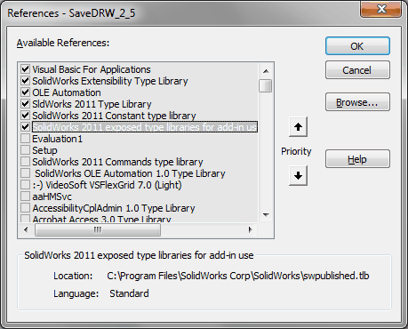

Макрос SaveDRW |
Top Previous Next |
|
Предназначен для сохранения чертежа, при котором автоматически выполняются следующие операции: 1.Если чертеж еще не был сохранен, файлу чертежа присваивается имя в соответствии с правилом проверки имен файлов (отключаемая опция*, при отключении имя файла чертежа = имя файла модели). Файл сохраняется в том же каталоге, что и файл модели, по которой оформлен чертеж. 2.Для сохраненного чертежа проверяется правильность имени файла (отключаемая опция*); 3.Заполняются свойства чертежа: Автор Заголовок Description Number 4.Контролируется свойство Формат модели (отключаемая опция*); 5.Контролируется версия основной надписи чертежа (отключаемая опция*). 6.Контролируется заимствование. * Опции отключаются в меню Общие настройки (см. пункт Установка и настройка). Макрос не имеет окна.
Библиотеки:  |